import pandas as pd
import numpy as np
import matplotlib.pyplot as plt
import seaborn as sns#Dataset Cleaning
uni = pd.read_csv('usnews.csv')uni.head()| Private | Apps | Accept | Enroll | Top10perc | Top25perc | F.Undergrad | P.Undergrad | Outstate | Room.Board | Books | Personal | PhD | Terminal | S.F.Ratio | perc.alumni | Expend | Grad.Rate | |
|---|---|---|---|---|---|---|---|---|---|---|---|---|---|---|---|---|---|---|
| 0 | Yes | 1660 | 1232 | 721 | 23 | 52 | 2885 | 537 | 7440 | 3300 | 450 | 2200 | 70 | 78 | 18.1 | 12 | 7041 | 60 |
| 1 | Yes | 2186 | 1924 | 512 | 16 | 29 | 2683 | 1227 | 12280 | 6450 | 750 | 1500 | 29 | 30 | 12.2 | 16 | 10527 | 56 |
| 2 | Yes | 1428 | 1097 | 336 | 22 | 50 | 1036 | 99 | 11250 | 3750 | 400 | 1165 | 53 | 66 | 12.9 | 30 | 8735 | 54 |
| 3 | Yes | 417 | 349 | 137 | 60 | 89 | 510 | 63 | 12960 | 5450 | 450 | 875 | 92 | 97 | 7.7 | 37 | 19016 | 59 |
| 4 | Yes | 193 | 146 | 55 | 16 | 44 | 249 | 869 | 7560 | 4120 | 800 | 1500 | 76 | 72 | 11.9 | 2 | 10922 | 15 |
uni.shape(777, 18)Dataset has 777 rows and 18 Columns.
uni.isnull().any()| 0 | |
|---|---|
| Private | False |
| Apps | False |
| Accept | False |
| Enroll | False |
| Top10perc | False |
| Top25perc | False |
| F.Undergrad | False |
| P.Undergrad | False |
| Outstate | False |
| Room.Board | False |
| Books | False |
| Personal | False |
| PhD | False |
| Terminal | False |
| S.F.Ratio | False |
| perc.alumni | False |
| Expend | False |
| Grad.Rate | False |
Dataset doesn’t consist of any null values.
print(uni.duplicated().sum())0Dataset doesn’t consist of any duplicate values
uni.info()<class 'pandas.core.frame.DataFrame'>
RangeIndex: 777 entries, 0 to 776
Data columns (total 18 columns):
# Column Non-Null Count Dtype
--- ------ -------------- -----
0 Private 777 non-null object
1 Apps 777 non-null int64
2 Accept 777 non-null int64
3 Enroll 777 non-null int64
4 Top10perc 777 non-null int64
5 Top25perc 777 non-null int64
6 F.Undergrad 777 non-null int64
7 P.Undergrad 777 non-null int64
8 Outstate 777 non-null int64
9 Room.Board 777 non-null int64
10 Books 777 non-null int64
11 Personal 777 non-null int64
12 PhD 777 non-null int64
13 Terminal 777 non-null int64
14 S.F.Ratio 777 non-null float64
15 perc.alumni 777 non-null int64
16 Expend 777 non-null int64
17 Grad.Rate 777 non-null int64
dtypes: float64(1), int64(16), object(1)
memory usage: 109.4+ KBuni.describe()| Apps | Accept | Enroll | Top10perc | Top25perc | F.Undergrad | P.Undergrad | Outstate | Room.Board | Books | Personal | PhD | Terminal | S.F.Ratio | perc.alumni | Expend | Grad.Rate | |
|---|---|---|---|---|---|---|---|---|---|---|---|---|---|---|---|---|---|
| count | 777.000000 | 777.000000 | 777.000000 | 777.000000 | 777.000000 | 777.000000 | 777.000000 | 777.000000 | 777.000000 | 777.000000 | 777.000000 | 777.000000 | 777.000000 | 777.000000 | 777.000000 | 777.000000 | 777.00000 |
| mean | 3001.638353 | 2018.804376 | 779.972973 | 27.558559 | 55.796654 | 3699.907336 | 855.298584 | 10440.669241 | 4357.526384 | 549.380952 | 1340.642214 | 72.660232 | 79.702703 | 14.089704 | 22.743887 | 9660.171171 | 65.46332 |
| std | 3870.201484 | 2451.113971 | 929.176190 | 17.640364 | 19.804778 | 4850.420531 | 1522.431887 | 4023.016484 | 1096.696416 | 165.105360 | 677.071454 | 16.328155 | 14.722359 | 3.958349 | 12.391801 | 5221.768440 | 17.17771 |
| min | 81.000000 | 72.000000 | 35.000000 | 1.000000 | 9.000000 | 139.000000 | 1.000000 | 2340.000000 | 1780.000000 | 96.000000 | 250.000000 | 8.000000 | 24.000000 | 2.500000 | 0.000000 | 3186.000000 | 10.00000 |
| 25% | 776.000000 | 604.000000 | 242.000000 | 15.000000 | 41.000000 | 992.000000 | 95.000000 | 7320.000000 | 3597.000000 | 470.000000 | 850.000000 | 62.000000 | 71.000000 | 11.500000 | 13.000000 | 6751.000000 | 53.00000 |
| 50% | 1558.000000 | 1110.000000 | 434.000000 | 23.000000 | 54.000000 | 1707.000000 | 353.000000 | 9990.000000 | 4200.000000 | 500.000000 | 1200.000000 | 75.000000 | 82.000000 | 13.600000 | 21.000000 | 8377.000000 | 65.00000 |
| 75% | 3624.000000 | 2424.000000 | 902.000000 | 35.000000 | 69.000000 | 4005.000000 | 967.000000 | 12925.000000 | 5050.000000 | 600.000000 | 1700.000000 | 85.000000 | 92.000000 | 16.500000 | 31.000000 | 10830.000000 | 78.00000 |
| max | 48094.000000 | 26330.000000 | 6392.000000 | 96.000000 | 100.000000 | 31643.000000 | 21836.000000 | 21700.000000 | 8124.000000 | 2340.000000 | 6800.000000 | 103.000000 | 100.000000 | 39.800000 | 64.000000 | 56233.000000 | 118.00000 |
Impossible values
Above_100_grd = uni[uni['Grad.Rate'] > 100]
display(Above_100_grd)| Private | Apps | Accept | Enroll | Top10perc | Top25perc | F.Undergrad | P.Undergrad | Outstate | Room.Board | Books | Personal | PhD | Terminal | S.F.Ratio | perc.alumni | Expend | Grad.Rate | |
|---|---|---|---|---|---|---|---|---|---|---|---|---|---|---|---|---|---|---|
| 95 | Yes | 3847 | 3433 | 527 | 9 | 35 | 1010 | 12 | 9384 | 4840 | 600 | 500 | 22 | 47 | 14.3 | 20 | 7697 | 118 |
Since there is only one value having graduation rate above 100, we can remove this row
uni = uni.drop(Above_100_grd.index)Above_100_phd = uni[uni['PhD'] > 100]
display(Above_100_phd)| Private | Apps | Accept | Enroll | Top10perc | Top25perc | F.Undergrad | P.Undergrad | Outstate | Room.Board | Books | Personal | PhD | Terminal | S.F.Ratio | perc.alumni | Expend | Grad.Rate | |
|---|---|---|---|---|---|---|---|---|---|---|---|---|---|---|---|---|---|---|
| 582 | No | 529 | 481 | 243 | 22 | 47 | 1206 | 134 | 4860 | 3122 | 600 | 650 | 103 | 88 | 17.4 | 16 | 6415 | 43 |
Since there is only one value having phd rate above 100, we can remove this row
uni = uni.drop(Above_100_phd.index)##Derived Variables
uni['acceptance_rate'] = (uni['Accept']/uni['Apps'])*100
uni.boxplot(column='acceptance_rate')
plt.show()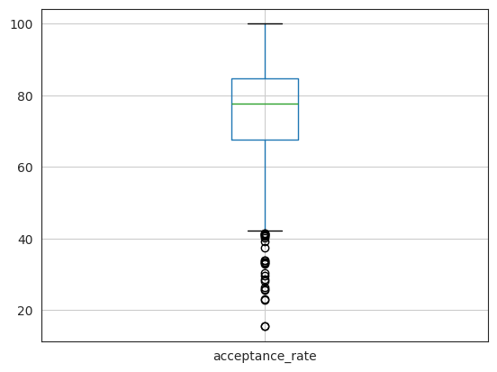
uni['acceptance_rate'].head()| acceptance_rate | |
|---|---|
| 0 | 74.216867 |
| 1 | 88.014639 |
| 2 | 76.820728 |
| 3 | 83.693046 |
| 4 | 75.647668 |
uni['yield_rate'] = (uni['Enroll']/uni['Accept'])*100
uni.boxplot(column='yield_rate')
plt.show()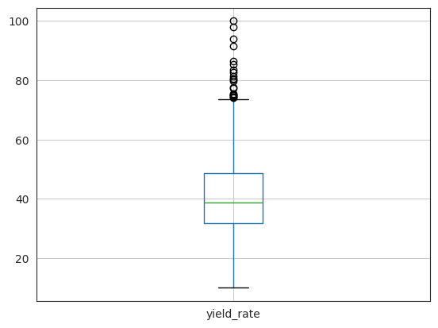
uni['yield_rate'].head()| yield_rate | |
|---|---|
| 0 | 58.522727 |
| 1 | 26.611227 |
| 2 | 30.628988 |
| 3 | 39.255014 |
| 4 | 37.671233 |
Descriptive Analysis
plt.figure(figsize=(6,4))
sns.countplot(
x=uni['Private'].astype('category'),
palette=['#66c2a5', '#fc8d62'],
edgecolor='black'
)
plt.title('Count of Private vs Public Colleges', fontsize=14, weight='bold')
plt.xlabel('College Type')
plt.ylabel('Number of Colleges')
plt.xticks([0, 1], ['Public (0)', 'Private (1)'])
plt.grid(axis='y', linestyle='--', alpha=0.6)
plt.show()/tmp/ipython-input-3844473724.py:2: FutureWarning:
Passing `palette` without assigning `hue` is deprecated and will be removed in v0.14.0. Assign the `x` variable to `hue` and set `legend=False` for the same effect.
sns.countplot(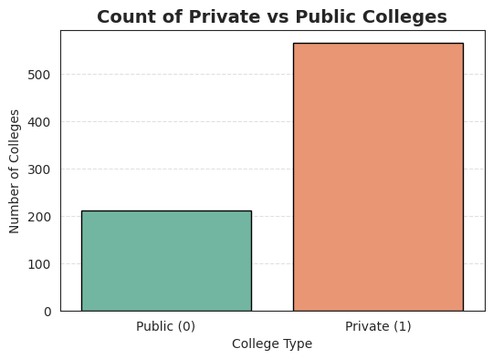
uni['CollegeType'] = uni['Private'].map({'Yes': 'Private', 'No': 'Public'})
plt.figure(figsize=(7,5))
sns.boxplot(
data=uni,
x='CollegeType',
y='Grad.Rate',
color='#AED6F1',
width=0.5
)
plt.title("Graduation Rate by College Type", fontsize=14, weight='bold')
plt.xlabel("College Type", fontsize=12, weight='bold')
plt.ylabel("Graduation Rate (%)", fontsize=12, weight='bold')
plt.grid(axis='y', linestyle='--', alpha=0.6)
plt.tight_layout()
plt.show()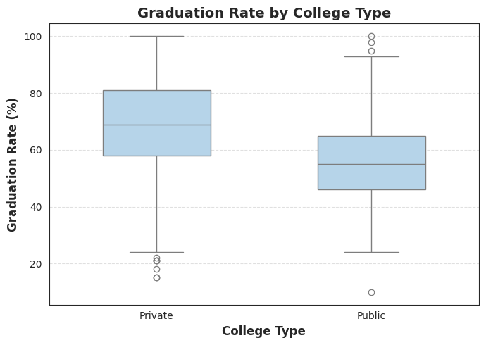
sns.histplot(uni['Expend'], bins=20, kde=True, color='lightcoral')
plt.title("Distribution of Per-Student Expenditure")
plt.xlabel("Expenditure ($)")
plt.show()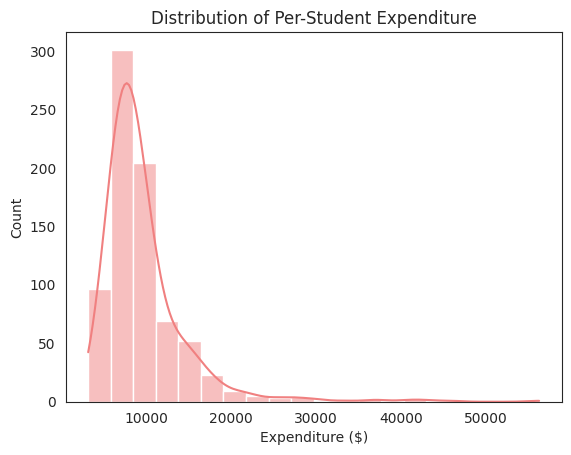
import matplotlib.pyplot as plt
import seaborn as sns
sns.set_style("whitegrid")
plt.figure(figsize=(7,5))
sns.boxplot(
x='CollegeType',
y='Expend',
data=uni,
order=['Public', 'Private'],
palette=['#5DADE2', '#F5B041'],
width=0.5,
fliersize=4
)
plt.title("Per-Student Expenditure by College Type", fontsize=14, fontweight='bold')
plt.xlabel("College Type", fontsize=12, weight='bold')
plt.ylabel("Expenditure per Student ($)", fontsize=12, weight='bold')
plt.grid(axis='y', linestyle='--', alpha=0.6)
plt.tight_layout()
plt.show()
/tmp/ipython-input-1862136286.py:8: FutureWarning:
Passing `palette` without assigning `hue` is deprecated and will be removed in v0.14.0. Assign the `x` variable to `hue` and set `legend=False` for the same effect.
sns.boxplot(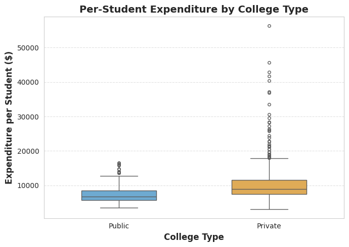
corr_features = ['Accept', 'Top25perc', 'perc.alumni', 'PhD', 'S.F.Ratio', 'Expend', 'Grad.Rate']
import matplotlib.pyplot as plt
import seaborn as sns
plt.figure(figsize=(8,6))
sns.set_style("white")
corr = uni[corr_features].corr()
sns.heatmap(
corr,
annot=True,
fmt=".2f",
cmap="coolwarm",
center=0,
linewidths=0.5,
annot_kws={"size":10},
cbar_kws={'label': 'Correlation Coefficient'}
)
plt.title("Correlation Heatmap of University Variables", fontsize=14, fontweight='bold')
plt.tight_layout()
plt.show()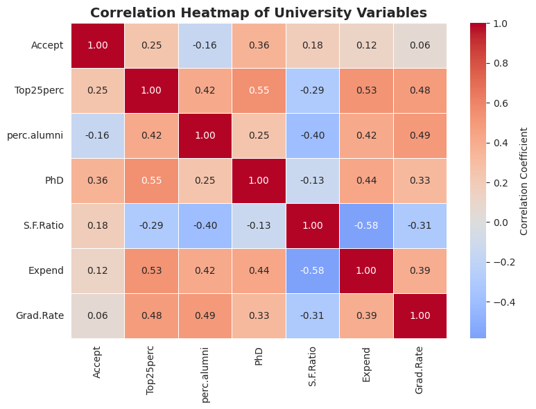
metrics = [
'Accept', 'Top25perc', 'perc.alumni', 'PhD',
'S.F.Ratio', 'Expend', 'Grad.Rate'
]
print("\nComparison of Private vs Public Institutions:")
comparison = uni.groupby('CollegeType')[metrics].mean().round(2)
from IPython.display import display
display(comparison.T)
print("\nInterpretation:")
print("- Private colleges generally have lower acceptance rates and higher graduation rates.")
print("- They also show higher faculty PhD percentages and higher per-student expenditure.")
print("- Public universities have higher student–faculty ratios, reflecting larger class sizes.")
Comparison of Private vs Public Institutions:| CollegeType | Private | Public |
|---|---|---|
| Accept | 1301.93 | 3935.58 |
| Top25perc | 57.00 | 52.73 |
| perc.alumni | 25.90 | 14.35 |
| PhD | 71.18 | 76.71 |
| S.F.Ratio | 12.94 | 17.14 |
| Expend | 10491.30 | 7463.26 |
| Grad.Rate | 68.91 | 56.10 |
Interpretation:
- Private colleges generally have lower acceptance rates and higher graduation rates.
- They also show higher faculty PhD percentages and higher per-student expenditure.
- Public universities have higher student–faculty ratios, reflecting larger class sizes.import matplotlib.pyplot as plt
import numpy as np
PALETTE = {
'blue': '#5DADE2',
'lavender': '#D7BDE2',
'pink': '#F1948A',
'mint': '#82E0AA',
'peach': '#F8C471',
'sky': '#85C1E9',
'sage': '#A9DFBF'
}
fig = plt.figure(figsize=(16, 13))
fig.patch.set_facecolor('#FAFAFA')
gs = fig.add_gridspec(3, 3, hspace=0.35, wspace=0.3,
top=0.93, bottom=0.05, left=0.08, right=0.95)
fig.suptitle('US Colleges Overview Dashboard (Hackathon Project)',
fontsize=20, fontweight='bold', color='#2C3E50')
ax1 = fig.add_subplot(gs[0, 0])
private_counts = uni['CollegeType'].value_counts()
colors_pie = [PALETTE['blue'], PALETTE['lavender']]
wedges, texts, autotexts = ax1.pie(
private_counts.values,
labels=private_counts.index,
autopct='%1.1f%%',
colors=colors_pie,
startangle=90,
pctdistance=1.2,
labeldistance=1.05,
textprops={'fontsize': 11, 'weight': 'bold', 'color': '#2C3E50'},
wedgeprops=dict(width=0.5, edgecolor='white', linewidth=2)
)
for autotext in autotexts:
autotext.set_color('white')
autotext.set_fontsize(12)
ax1.set_title('Distribution by Institution Type', fontweight='bold',
fontsize=13, pad=15, color='#34495E')
ax2 = fig.add_subplot(gs[0, 1:])
n, bins, patches = ax2.hist(uni['acceptance_rate'].dropna(), bins=35,
color=PALETTE['pink'], edgecolor='white', alpha=0.85, linewidth=1.5)
for i, patch in enumerate(patches):
patch.set_facecolor(plt.cm.RdPu(0.3 + 0.5 * i / len(patches)))
ax2.axvline(uni['acceptance_rate'].mean(), color='#E74C3C', linestyle='--', linewidth=3,
label=f'Mean: {uni["acceptance_rate"].mean():.1f}%', alpha=0.8)
ax2.set_xlabel('Application rate %', fontsize=12, fontweight='bold', color='#34495E')
ax2.set_ylabel('Number of Colleges', fontsize=12, fontweight='bold', color='#34495E')
ax2.set_title('Acceptance Rate Distribution', fontweight='bold', fontsize=13, pad=15, color='#34495E')
ax2.legend(fontsize=10, frameon=True, fancybox=True, shadow=True)
ax2.grid(True, alpha=0.3, linestyle='--')
ax2.spines['top'].set_visible(False)
ax2.spines['right'].set_visible(False)
ax3 = fig.add_subplot(gs[1, :2])
n, bins, patches = ax3.hist(uni['Grad.Rate'].dropna(), bins=35,
color=PALETTE['mint'], edgecolor='white', alpha=0.85, linewidth=1.5)
for i, patch in enumerate(patches):
patch.set_facecolor(plt.cm.YlGn(0.3 + 0.5 * i / len(patches)))
ax3.axvline(uni['Grad.Rate'].mean(), color='#27AE60', linestyle='--', linewidth=3,
label=f'Mean: {uni["Grad.Rate"].mean():.1f}%', alpha=0.8)
ax3.set_xlabel('Graduation Rate (%)', fontsize=12, fontweight='bold', color='#34495E')
ax3.set_ylabel('Number of Colleges', fontsize=12, fontweight='bold', color='#34495E')
ax3.set_title('Graduation Rate Distribution', fontweight='bold', fontsize=13, pad=15, color='#34495E')
ax3.legend(fontsize=10, frameon=True, fancybox=True, shadow=True)
ax3.grid(True, alpha=0.3, linestyle='--')
ax3.spines['top'].set_visible(False)
ax3.spines['right'].set_visible(False)
ax4 = fig.add_subplot(gs[1, 2])
violin_data = [uni[uni['CollegeType'] == 'Public']['Expend'].dropna(),
uni[uni['CollegeType'] == 'Private']['Expend'].dropna()]
parts = ax4.violinplot(violin_data, positions=[0, 1], showmeans=True, showmedians=True, widths=0.7)
for i, pc in enumerate(parts['bodies']):
pc.set_facecolor([PALETTE['lavender'], PALETTE['blue']][i])
pc.set_alpha(0.8)
pc.set_edgecolor('white')
pc.set_linewidth(2)
ax4.set_xticks([0, 1])
ax4.set_xticklabels(['Public', 'Private'], fontsize=11, fontweight='bold')
ax4.set_ylabel('Expenditure per Student ($)', fontsize=12, fontweight='bold', color='#34495E')
ax4.set_title('Expenditure by Institution Type', fontweight='bold', fontsize=13, pad=15, color='#34495E')
ax4.grid(True, alpha=0.3, axis='y', linestyle='--')
ax4.spines['top'].set_visible(False)
ax4.spines['right'].set_visible(False)
ax5 = fig.add_subplot(gs[2, 0])
n, bins, patches = ax5.hist(uni['Top25perc'].dropna(), bins=30,
color=PALETTE['peach'], edgecolor='white', alpha=0.85, linewidth=1.5)
for i, patch in enumerate(patches):
patch.set_facecolor(plt.cm.Oranges(0.3 + 0.5 * i / len(patches)))
ax5.axvline(uni['Top25perc'].mean(), color='#E67E22', linestyle='--', linewidth=3,
label=f'Mean: {uni["Top25perc"].mean():.1f}%', alpha=0.8)
ax5.set_xlabel('% from Top 25% of HS', fontsize=11, fontweight='bold', color='#34495E')
ax5.set_ylabel('Count', fontsize=11, fontweight='bold', color='#34495E')
ax5.set_title('Top 25% HS Students', fontweight='bold', fontsize=12, pad=12, color='#34495E')
ax5.legend(fontsize=9, frameon=True, fancybox=True, shadow=True)
ax5.grid(True, alpha=0.3, linestyle='--')
ax5.spines['top'].set_visible(False)
ax5.spines['right'].set_visible(False)
ax6 = fig.add_subplot(gs[2, 1])
n, bins, patches = ax6.hist(uni['PhD'].dropna(), bins=30,
color=PALETTE['sky'], edgecolor='white', alpha=0.85, linewidth=1.5)
for i, patch in enumerate(patches):
patch.set_facecolor(plt.cm.Blues(0.3 + 0.5 * i / len(patches)))
ax6.axvline(uni['PhD'].mean(), color='#3498DB', linestyle='--', linewidth=3,
label=f'Mean: {uni["PhD"].mean():.1f}%', alpha=0.8)
ax6.set_xlabel('% Faculty with PhD', fontsize=11, fontweight='bold', color='#34495E')
ax6.set_ylabel('Count', fontsize=11, fontweight='bold', color='#34495E')
ax6.set_title('Faculty PhD Rate', fontweight='bold', fontsize=12, pad=12, color='#34495E')
ax6.legend(fontsize=9, frameon=True, fancybox=True, shadow=True)
ax6.grid(True, alpha=0.3, linestyle='--')
ax6.spines['top'].set_visible(False)
ax6.spines['right'].set_visible(False)
ax7 = fig.add_subplot(gs[2, 2])
n, bins, patches = ax7.hist(uni['S.F.Ratio'].dropna(), bins=30,
color=PALETTE['sage'], edgecolor='white', alpha=0.85, linewidth=1.5)
for i, patch in enumerate(patches):
patch.set_facecolor(plt.cm.Greens(0.3 + 0.5 * i / len(patches)))
ax7.axvline(uni['S.F.Ratio'].mean(), color='#2ECC71', linestyle='--', linewidth=3,
label=f'Mean: {uni["S.F.Ratio"].mean():.1f}:1', alpha=0.8)
ax7.set_xlabel('Student-Faculty Ratio', fontsize=11, fontweight='bold', color='#34495E')
ax7.set_ylabel('Count', fontsize=11, fontweight='bold', color='#34495E')
ax7.set_title('Student-Faculty Ratio Distribution', fontweight='bold', fontsize=12, pad=12, color='#34495E')
ax7.legend(fontsize=9, frameon=True, fancybox=True, shadow=True)
ax7.grid(True, alpha=0.3, linestyle='--')
ax7.spines['top'].set_visible(False)
ax7.spines['right'].set_visible(False)
plt.tight_layout()
plt.show()/tmp/ipython-input-3643788599.py:141: UserWarning: This figure includes Axes that are not compatible with tight_layout, so results might be incorrect.
plt.tight_layout()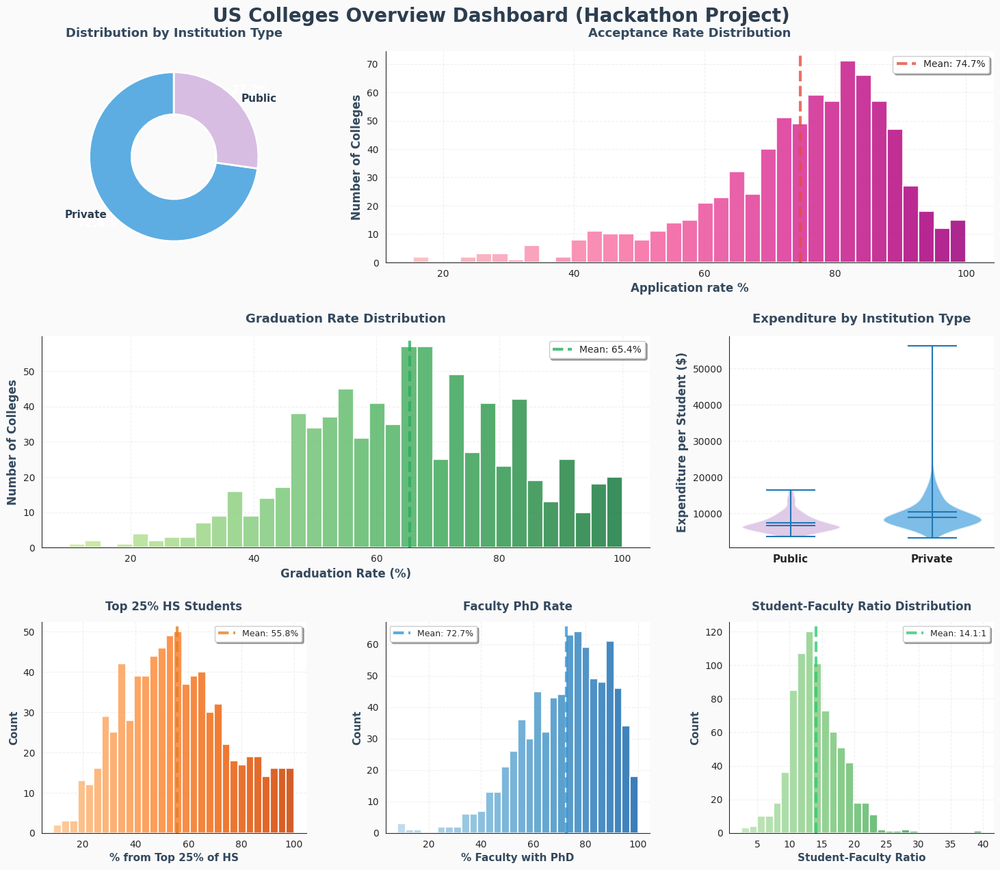
import matplotlib.pyplot as plt
private = uni[uni['CollegeType'] == 'Private']
public = uni[uni['CollegeType'] == 'Public']
PASTEL_COLORS = {
'blue': '#5DADE2',
'lavender': '#D7BDE2'
}
fig, ax = plt.subplots(figsize=(12, 8))
fig.patch.set_facecolor('#FAFAFA')
ax.scatter(public['Outstate'], public['Grad.Rate'],
alpha=0.6, label='Public', s=100,
color=PASTEL_COLORS['lavender'],
edgecolor='white', linewidth=1.5)
ax.scatter(private['Outstate'], private['Grad.Rate'],
alpha=0.6, label='Private', s=100,
color=PASTEL_COLORS['blue'],
edgecolor='white', linewidth=1.5)
ax.set_xlabel('Out-of-State Tuition ($)', fontsize=14, fontweight='bold', color='#34495E')
ax.set_ylabel('Graduation Rate (%)', fontsize=14, fontweight='bold', color='#34495E')
ax.set_title('Tuition vs Graduation Rate by Institution Type',
fontweight='bold', fontsize=16, pad=20, color='#2C3E50')
ax.legend(fontsize=12, frameon=True, fancybox=True, shadow=True, loc='lower right')
ax.grid(True, alpha=0.3, linestyle='--')
ax.spines['top'].set_visible(False)
ax.spines['right'].set_visible(False)
plt.tight_layout()
plt.show()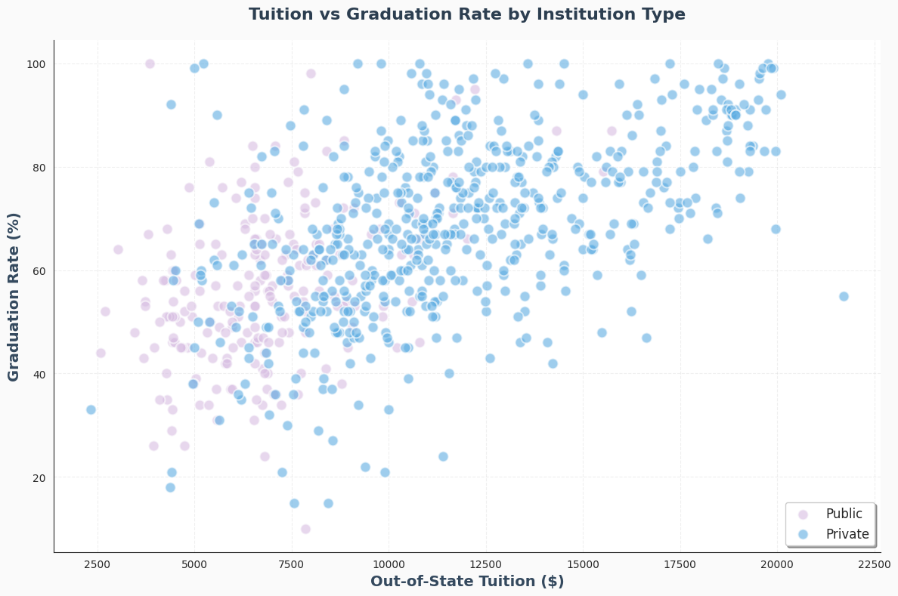
import matplotlib.pyplot as plt
fig, ax = plt.subplots(figsize=(12, 8))
fig.patch.set_facecolor('#FAFAFA')
scatter = ax.scatter(
uni['S.F.Ratio'],
uni['Grad.Rate'],
alpha=0.7,
s=100,
c=uni['Expend'],
cmap='YlOrRd',
edgecolor='white',
linewidth=1.2
)
cbar = plt.colorbar(scatter, ax=ax)
cbar.set_label('Expenditure per Student ($)', fontsize=12, fontweight='bold', color='#34495E')
cbar.ax.tick_params(labelsize=11, colors='#34495E')
ax.set_xlabel('Student-Faculty Ratio', fontsize=14, fontweight='bold', color='#34495E')
ax.set_ylabel('Graduation Rate (%)', fontsize=14, fontweight='bold', color='#34495E')
ax.set_title('Student-Faculty Ratio vs Graduation Rate\n(colored by Expenditure per Student)',
fontweight='bold', fontsize=16, pad=20, color='#2C3E50')
ax.grid(True, alpha=0.3, linestyle='--')
ax.spines['top'].set_visible(False)
ax.spines['right'].set_visible(False)
plt.tight_layout()
plt.show()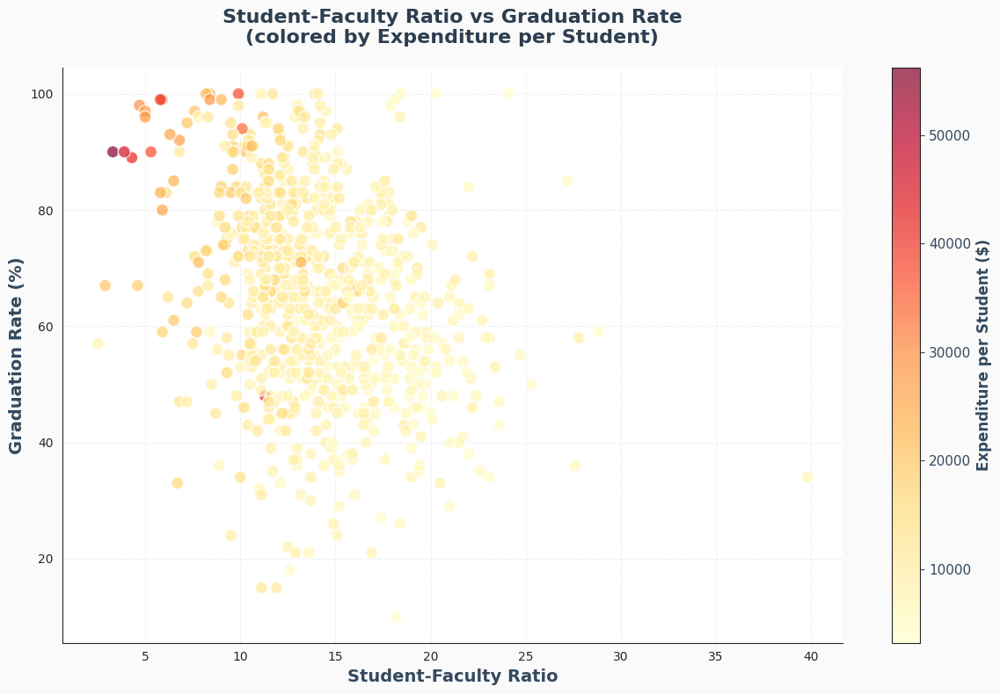
Predictive Analysis
uni.head()| Private | Apps | Accept | Enroll | Top10perc | Top25perc | F.Undergrad | P.Undergrad | Outstate | Room.Board | ... | Personal | PhD | Terminal | S.F.Ratio | perc.alumni | Expend | Grad.Rate | acceptance_rate | yield_rate | CollegeType | |
|---|---|---|---|---|---|---|---|---|---|---|---|---|---|---|---|---|---|---|---|---|---|
| 0 | Yes | 1660 | 1232 | 721 | 23 | 52 | 2885 | 537 | 7440 | 3300 | ... | 2200 | 70 | 78 | 18.1 | 12 | 7041 | 60 | 74.216867 | 58.522727 | Private |
| 1 | Yes | 2186 | 1924 | 512 | 16 | 29 | 2683 | 1227 | 12280 | 6450 | ... | 1500 | 29 | 30 | 12.2 | 16 | 10527 | 56 | 88.014639 | 26.611227 | Private |
| 2 | Yes | 1428 | 1097 | 336 | 22 | 50 | 1036 | 99 | 11250 | 3750 | ... | 1165 | 53 | 66 | 12.9 | 30 | 8735 | 54 | 76.820728 | 30.628988 | Private |
| 3 | Yes | 417 | 349 | 137 | 60 | 89 | 510 | 63 | 12960 | 5450 | ... | 875 | 92 | 97 | 7.7 | 37 | 19016 | 59 | 83.693046 | 39.255014 | Private |
| 4 | Yes | 193 | 146 | 55 | 16 | 44 | 249 | 869 | 7560 | 4120 | ... | 1500 | 76 | 72 | 11.9 | 2 | 10922 | 15 | 75.647668 | 37.671233 | Private |
5 rows × 21 columns
import statsmodels.api as sm
uni['Private'] = uni['Private'].map({'Yes': 1, 'No': 0})
X = uni[['acceptance_rate', 'Top10perc', 'Top25perc', 'perc.alumni', 'Private']]
y = uni['Grad.Rate']
X = sm.add_constant(X)
model = sm.OLS(y, X).fit()
print(model.summary()) OLS Regression Results
==============================================================================
Dep. Variable: Grad.Rate R-squared: 0.387
Model: OLS Adj. R-squared: 0.383
Method: Least Squares F-statistic: 97.11
Date: Sat, 25 Oct 2025 Prob (F-statistic): 2.57e-79
Time: 10:48:53 Log-Likelihood: -3108.8
No. Observations: 775 AIC: 6230.
Df Residuals: 769 BIC: 6257.
Df Model: 5
Covariance Type: nonrobust
===================================================================================
coef std err t P>|t| [0.025 0.975]
-----------------------------------------------------------------------------------
const 50.8310 3.685 13.795 0.000 43.598 58.064
acceptance_rate -0.1589 0.038 -4.178 0.000 -0.234 -0.084
Top10perc 0.0965 0.064 1.504 0.133 -0.029 0.222
Top25perc 0.1793 0.054 3.301 0.001 0.073 0.286
perc.alumni 0.3589 0.048 7.550 0.000 0.266 0.452
Private 7.7231 1.217 6.346 0.000 5.334 10.112
==============================================================================
Omnibus: 17.830 Durbin-Watson: 1.957
Prob(Omnibus): 0.000 Jarque-Bera (JB): 31.114
Skew: -0.137 Prob(JB): 1.75e-07
Kurtosis: 3.943 Cond. No. 773.
==============================================================================
Notes:
[1] Standard Errors assume that the covariance matrix of the errors is correctly specified.Accept (β = -0.1589, p < 0.001): Interpretation: More selective institutions (lower acceptance rate) achieve higher graduation rates, showing that student selectivity strongly predicts success. Suggestion: Colleges should strengthen admissions criteria and focus on attracting and retaining qualified applicants, using holistic evaluations rather than merely expanding class size.
Top10perc (β = 0.10, p = 0.133): Interpretation: The positive but insignificant coefficient suggests that having top 10% students alone doesn’t guarantee higher graduation rates once other quality measures are considered. Suggestion: Instead of targeting only “top-tier” admits, institutions should support broader academic excellence, emphasizing mentorship and learning resources to help all students succeed.
Top25perc (β = 0.18, p = 0.001): Interpretation: A significant positive relationship; more students from the top 25% of their high school class leads to higher graduation rates. Suggestion: Universities should enhance outreach and scholarships to attract academically prepared students within the broader top quartile, not just the very elite group.
perc.alumni (β = 0.36, p < 0.001): Interpretation: Alumni engagement is a powerful driver of student success, likely through financial support, mentoring, and a strong institutional network. Suggestion: Schools should expand alumni programs, such as mentorship networks, campus engagement events, and career partnerships, to sustain a supportive ecosystem for students.
Private (β = 7.72, p < 0.001): Interpretation: Private universities graduate roughly 7-8% more students than public ones, reflecting advantages like smaller class sizes, funding, and faculty attention. Suggestion: Public institutions should adopt best practices from private peers (such as improved student-faculty ratios, personalized advising, and enhanced campus resources) to narrow the gap.
Intercept (β = 50.83, p < 0.001): Interpretation: Represents a baseline graduation rate of about 51% when all predictors are zero, providing a reference rather than a realistic scenario. Suggestion: Use this as a benchmark for comparing improvements; policies or programs that lift graduation rates substantially above this baseline are effectively contributing to success.
import matplotlib.pyplot as plt
plt.scatter(uni['Grad.Rate'], model.fittedvalues, alpha=0.6)
plt.xlabel("Actual Graduation Rate")
plt.ylabel("Predicted Graduation Rate")
plt.title("Actual vs Predicted Graduation Rate")
plt.axline((0, 0), slope=1, color='red', linestyle='--')
plt.show()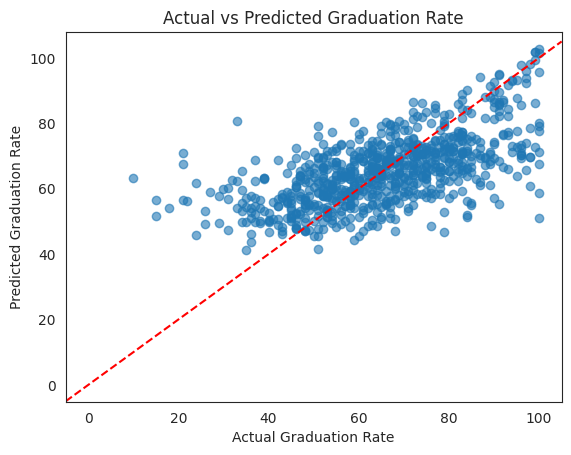
import seaborn as sns
coef = pd.DataFrame({'Variable': model.params.index, 'Coefficient': model.params.values})
coef = coef[coef['Variable'] != 'const']
sns.barplot(x='Coefficient', y='Variable', data=coef, palette='coolwarm')
plt.title("Effect of Key Predictors on Graduation Rate")
plt.axvline(0, color='black', linestyle='--')
plt.show()/tmp/ipython-input-250856987.py:5: FutureWarning:
Passing `palette` without assigning `hue` is deprecated and will be removed in v0.14.0. Assign the `y` variable to `hue` and set `legend=False` for the same effect.
sns.barplot(x='Coefficient', y='Variable', data=coef, palette='coolwarm')
Prescriptive Analysis
import pandas as pd
import numpy as np
import matplotlib.pyplot as plt
import seaborn as sns
from sklearn.preprocessing import StandardScaler
from sklearn.cluster import KMeans
from sklearn.decomposition import PCAfeatures = ['acceptance_rate', 'PhD', 'S.F.Ratio', 'Expend', 'Grad.Rate']
X = uni[features].dropna()scaler = StandardScaler()
X_scaled = scaler.fit_transform(X)inertia = []
K = range(1, 10)
for k in K:
kmeans = KMeans(n_clusters=k, random_state=42)
kmeans.fit(X_scaled)
inertia.append(kmeans.inertia_)
plt.figure(figsize=(6,4))
plt.plot(K, inertia, marker='o')
plt.xlabel('Number of Clusters (k)')
plt.ylabel('Inertia')
plt.title('Elbow Method for Optimal k')
plt.show()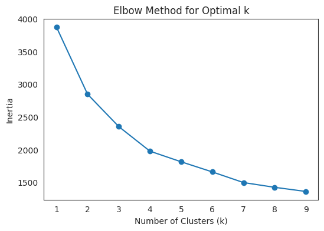
kmeans = KMeans(n_clusters=3, random_state=42)
uni['Cluster'] = kmeans.fit_predict(X_scaled)cluster_summary = uni.groupby('Cluster')[features].mean().round(2)
print(cluster_summary) acceptance_rate PhD S.F.Ratio Expend Grad.Rate
Cluster
0 78.22 62.87 16.09 7057.38 51.36
1 76.64 77.13 13.45 9441.66 73.79
2 54.03 90.54 9.39 19927.53 83.14import matplotlib.pyplot as plt
import seaborn as sns
plt.figure(figsize=(8,6))
sns.scatterplot(
x=uni['acceptance_rate'],
y=uni['Grad.Rate'],
hue=uni['Cluster'],
palette='Set2',
s=80, alpha=0.8, edgecolor='black'
)
centers = scaler.inverse_transform(kmeans.cluster_centers_)
plt.scatter(
centers[:,0], centers[:,-1],
c='red', s=250, marker='X', edgecolors='black', label='Centroid'
)
plt.title('University Clusters: Selectivity vs Graduation Rate')
plt.xlabel('Acceptance Rate')
plt.ylabel('Graduation Rate')
plt.legend(title='Cluster', loc='best')
plt.grid(True)
plt.show()
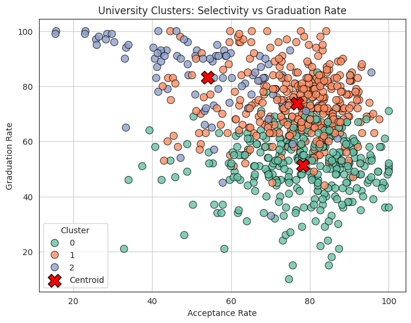
Each dot is a university. Our model grouped similar schools together. On the left are highly selective, high-performing institutions. The middle cluster represents balanced, competitive universities. On the right are open-access colleges where graduation rates tend to be lower. The red X marks the center of each group.
uni_filtered = uni[uni['S.F.Ratio'] < 30]
plt.figure(figsize=(8,6))
sns.scatterplot(
x=uni_filtered['S.F.Ratio'],
y=uni_filtered['Grad.Rate'],
hue=uni_filtered['Cluster'],
palette='Set2',
s=80, alpha=0.8, edgecolor='black'
)
plt.scatter(
centers[:,2], centers[:,-1],
c='red', s=250, marker='X', edgecolors='black', label='Centroid'
)
plt.title('University Clusters: Faculty Ratio vs Graduation Rate (Outliers Removed)')
plt.xlabel('Student–Faculty Ratio')
plt.ylabel('Graduation Rate')
plt.legend(title='Cluster', loc='best')
plt.grid(True)
plt.show()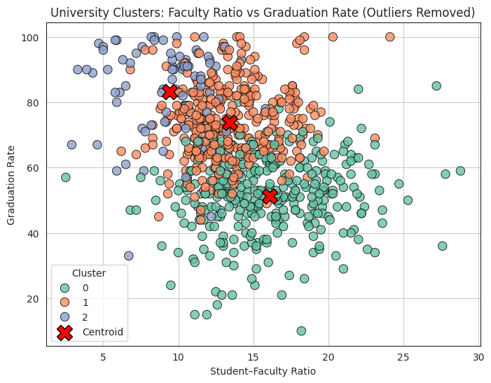
This chart shows how faculty availability relates to student success. Each color represents a cluster of similar universities. We see that universities with lower student-faculty ratios tend to achieve higher graduation rates. The clusters reveal three broad profiles: elite faculty-rich schools, competitive mid-tier universities, and broad-access institutions with resource challenges.